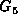
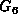

Data Structures and Algorithms
with Object-Oriented Design Patterns in Java
Data Structures and Algorithms
with Object-Oriented Design Patterns in Java
Practical applications of graphs usually require that they
be annotated with additional information.
Such information may be attached to the edges of the graph
and to the nodes of the graph.
A graph which has been annotated in some way is called a
labeled graph .
Figure  shows two examples of this.
shows two examples of this.
For example, we can use a directed graph with labeled vertices
such as  in Figure
to represent a finite state machine.
Each vertex corresponds to a state of the machine
and each edge corresponds to an allowable state transition.
In such a graph we can attach a label to each vertex
that records some property of the corresponding state
such as the latency time for that state.
We can use an undirected graph with labeled edges
such as  in Figure
to represent geographic information.
In such a graph, the vertices represent geographic locations
and the edges represent possible routes between locations.
In such a graph we might use a label on each edge
to represent the distance between the end points.
 Copyright © 1998 by Bruno R. Preiss, P.Eng. All rights reserved.
Copyright © 1998 by Bruno R. Preiss, P.Eng. All rights reserved.